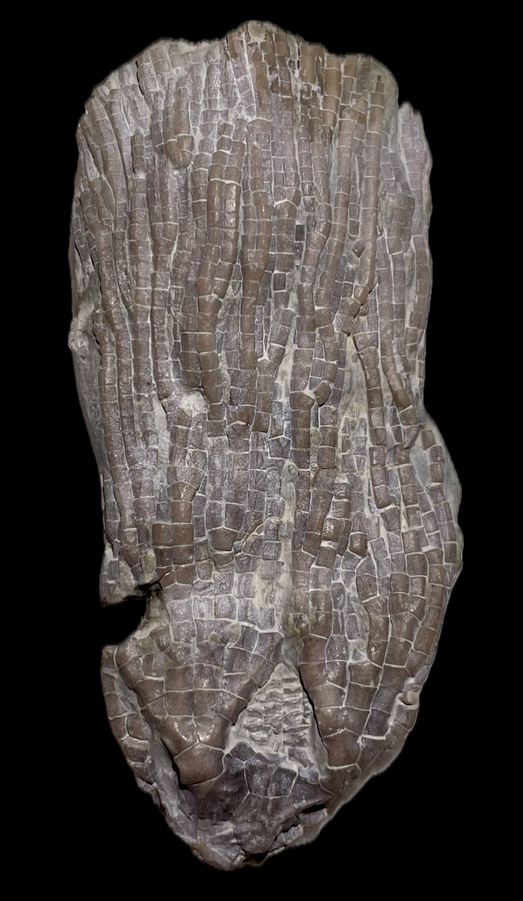
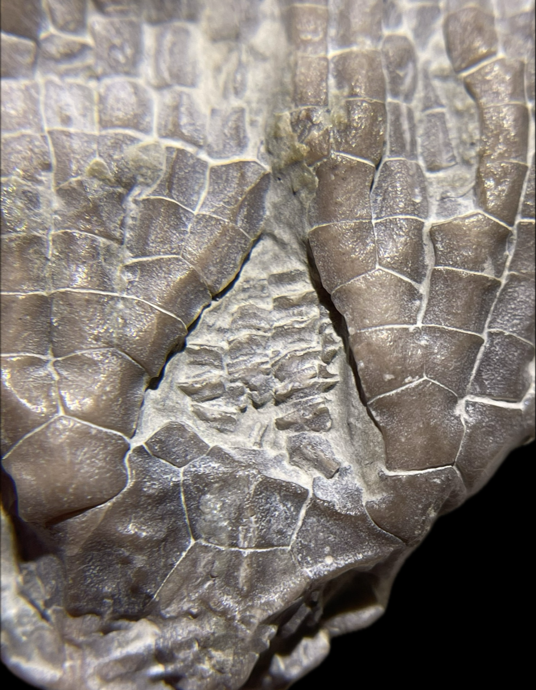

Gissocrinus goniodactylus
• Silurian
• Much Wenlock Limestone Formation
• Wren's Nest, Dudley, UK
Size: 8 cm crown
Gissocrinus goniodactylus is characterized by strong ridged ornamentation on the calyx and densely-branching arms with sharply-angulated aboral and lateral surfaces, hence the specific name ("gonio-" meaning "angle" and "dactyl-" meaning "finger", the latter being archaic terminology for a crinoid arm's branches). It also possesses a large anal sac with ridged rectangular plates in a longitudinal "ladder-like" pattern. The species has only been found in the Much Wenlock Limestone Formation of the UK. This is an impressive specimen from the Silurian deposits of Dudley, collected in the Victorian era as is the case for many Dudley specimens.
|

|